Thêm bước, nhưng mỗi bước chỉ còn một quyết định.
Tóm tắt trong 30 giây
Vấn đềNgười mới thiếu kiến thức, còn flow thì đòi hỏi quá nhiều cùng lúc
Chủ doanh nghiệp nhỏ chưa từng chạy quảng cáo không biết cách chọn đối tượng và ngân sách. Flow 4 bước cũ lại dồn quá nhiều trường, nút và quyết định, nên họ bị đứng hình, đoán mò hoặc bỏ qua các trường quan trọng.
Vai tròMình phụ trách UX, UI và component
Team Hàn Quốc chạy phỏng vấn người dùng, mình tổng hợp insight. Mình đảm nhận UX, UI, variable và component trong Figma, có hỗ trợ Manual QA. Ai quyết định phần nào được chia rõ ngay bên dưới.
Hành độngPrototype trước, thiết kế sau
Mình dựng prototype HTML 6 bước bằng Claude, chốt thứ tự bước cùng dev qua nhiều vòng, rồi thiết kế từng bước, các state lỗi và design system trong Figma. Mỗi bước một quyết định; ad copy giờ đi trước Audience.
Kết quảĐã ra mắt 28/10/2026, đang đo
Mốc cần vượt: 33% người bắt đầu tạo campaign đầu tiên launch được, thời gian trung vị 21,5 phút (flow 4 bước). Dữ liệu sau ra mắt chưa đủ để kết luận. Cách đo nằm ở mục 07.
Ai quyết định phần nào
Đây là flow làm theo team, nên mình nói rõ phần của mình bắt đầu và dừng ở đâu.
Mình quyết địnhTừng màn hình hoạt động thế nào
Bố cục và một quyết định duy nhất của mỗi bước, các state lỗi, loading, bị khóa và trống, prototype HTML 6 bước, và variable cùng component trong Figma.
Quyết định cùng nhauThứ tự các bước, cùng dev
Thứ tự 6 bước, gồm cả việc đặt nội dung quảng cáo trước Audience, được chốt cùng dev qua nhiều vòng, lấy prototype làm thứ để cùng phản hồi.
Đầu vào mình nhậnPhỏng vấn và góp ý
Team Hàn Quốc chạy phỏng vấn người dùng, CTO gửi phản hồi về Việt Nam. CTO, Director và FE developer góp ý cho từng phiên bản. Mình không trực tiếp chạy phỏng vấn.
3 quyết định định hình flow này
Nếu chỉ có hai phút, hãy đọc ba quyết định này. Chúng cho thấy các lựa chọn là gì, mình chọn gì và vì sao. Phần còn lại của trang là đọc thêm: từng bước, edge case và state, và design system.
Quyết định 1 · Lựa chọn
Giữ 4 bước với ít lần bấm Next nhất có thể, hoặc tách thành 6 bước, mỗi bước một hành động chính.
Mình chọn
6 bước. Mỗi màn hình phải trả lời được: "Mình đang quyết định điều gì ở đây?"
Vì sao
Người mới bị đứng hình khi một bước nhồi quá nhiều trường và quyết định. Ít bước hơn chưa chắc dễ hơn. Xem cách 4 bước thành 6 bước
Quyết định 2 · Lựa chọn
Ở bản 6 bước đầu tiên của mình, Audience nằm trước Create Ad.
Mình chọn
Chuyển ad copy lên trước Audience.
Vì sao
AI cần ad copy để gợi ý nên nhắm ai. Mình phát hiện điều này khi thử trên prototype HTML, trước khi vẽ Figma. Xem thứ tự các bước
Quyết định 3 · Lựa chọn
CTO đề nghị có nút "Save" sau khi sửa inline.
Mình chọn
Enter hoặc bấm ra ngoài là lưu (Saving rồi Saved), Esc để hủy. Không có nút Save.
Vì sao
Việc lưu đã xảy ra rồi, nên thêm nút chỉ tạo thêm một thao tác. Trường bị giới hạn 120 ký tự nên một dòng là đủ. Xem các state của inline edit
LinkAdz giúp được gì
Tạo quảng cáo một lần, chạy trên 5 nền tảng, mà không phải học 5 bộ thuật ngữ.
Cùng một khái niệm, mỗi nền tảng gọi một tên: Google gọi là ad group, Meta và LinkedIn gọi là ad set, Kakao và Naver gọi là 광고그룹. Trong LinkAdz, người dùng chỉ thấy một tên, còn sản phẩm lo phần chuyển sang từng nền tảng.
Mình liệt kê khái niệm và quy tắc của từng nền tảng, rồi cùng dev đặt bộ tên chung này. Nó áp dụng cho cả sản phẩm, không riêng flow tạo campaign. Chọn một thuật ngữ để xem mỗi nền tảng gọi nó là gì.
chọn một thuật ngữ
| Thuật ngữ LinkAdz | Google Ads | Meta | Kakao Moment | Naver Search Ads | Lý do chọn tên | |
|---|---|---|---|---|---|---|
| Ad account | Account | Ad account | Ad account | 광고계정 (Ad account) | Customer | Cùng khái niệm ở cả 5 nền tảng, chỉ khác cách gọi. |
| Project | Campaign: giữ ngân sách và cài đặt, quyết định nơi quảng cáo hiển thị | Campaign: mỗi campaign một mục tiêu | Campaign (trước đây là Campaign Group) | 캠페인 (Campaign) | 캠페인 (Campaign) | Cả 5 nền tảng đều có Campaign, LinkedIn đã đổi về cùng tên. |
| Campaign | Ad group: nhóm quảng cáo tương tự và keyword | Ad set: targeting, ngân sách, lịch, bidding, vị trí hiển thị | Ad set (trước đây là Campaign) | 광고그룹: ngân sách, lịch, targeting, bid, vị trí | 광고그룹: keyword và quảng cáo, bid mặc định, vùng, thiết bị | Cấp lệch tên nhiều nhất. Đặt tên theo vai trò: nhóm thiết lập đối tượng, ngân sách, lịch. |
| Ad | Ad | Ad: creative, định dạng, danh tính | Ad (API cũ gọi là Creative) | 소재 (Creative) | 소재, thêm 확장소재 (extension) | Google, Meta, LinkedIn gọi Ad; Kakao, Naver gọi 소재. Bước Create Ad gồm Ad copy và Ad creatives. |
| Keyword | Keyword: nằm trong ad group | Không có cấp này | Không có cấp này | Không có cấp này (targeting ở cấp ad group) | Keyword: nằm trong ad group | Chỉ Google và Naver có cấp keyword. Ở LinkAdz, keyword được xử lý ở bước Audience. |
01
Hiểu vấn đề
Người dùng mới không biết màn hình đang yêu cầu mình quyết định điều gì.
Họ là ai. Chủ doanh nghiệp nhỏ ở Hàn Quốc, thị trường đầu tiên của LinkAdz. Họ không phải dân marketing và không cần biết "ad set" là gì. Họ chỉ muốn ba câu trả lời: quảng cáo có đang chạy không, mình có phải làm gì không, và khi nào có chuyện tiếp theo.
Insight đến từ đâu
Team sản phẩm ở Việt Nam, còn người dùng ở Hàn. Mình ghép insight từ hai nguồn:
Nguồn 1
Phỏng vấn người dùng
- Team ở Hàn gặp và phỏng vấn người dùng trực tiếp.
- CTO tổng hợp góp ý và gửi về team ở Việt Nam.
Nguồn 2
Dữ liệu hành vi
- Người dùng bấm vào những thứ chỉ trông giống nút.
- Họ dừng lại vì không biết màn hình đang yêu cầu gì.
Mình tổng hợp
Hai vấn đề trông như một
- Thiếu kiến thức chạy quảng cáo và một flow đòi hỏi quá nhiều có nguyên nhân khác nhau.
- Nên cần cách giải khác nhau. Ba phần của vấn đề được trình bày bên dưới.
Vấn đề gồm ba phần
Mỗi phần dẫn đến một phần khác của giải pháp, nên cách giải không chỉ là "thêm bước".
1 · Vấn đề của người dùngNgười mới không tự thiết lập được campaign
Chủ doanh nghiệp nhỏ chưa từng chạy quảng cáo không biết cách chọn đối tượng và ngân sách, và mỗi nền tảng gọi cùng một thứ bằng một tên khác. Cách giải: AI gợi ý đối tượng, màn ngân sách đưa ra ba mức, người dùng chỉ chỉnh thay vì bắt đầu từ con số không.
2 · Vấn đề trải nghiệmFlow cũ đòi quyết định quá nhiều cùng lúc
Flow 4 bước gộp lịch, ngân sách, cài đặt nền tảng và đối tượng lại, với nhiều trường, nút và quyết định trên một màn hình. Cách giải: 6 bước, mỗi bước một quyết định, và các phần hiện lần lượt từng cái (progressive disclosure).
3 · Hệ quảBỏ qua hoặc điền bừa trường quan trọng, bỏ campaign giữa chừng
Người mới đứng hình, điền bừa hoặc bỏ qua các trường quan trọng như audience và forecast. Điều đó dẫn đến chạy sai đối tượng, lãng phí ngân sách hoặc bỏ giữa chừng, và chỉ một trong ba người launch. Cách giải: Next bị khóa cho đến khi điền đủ trường quan trọng, và gợi ý nói rõ lỗi cụ thể (validation).
Từ bằng chứng đến quyết định thiết kế
Đây là chính những bằng chứng ở trên, xếp thành một chuỗi: mình thấy gì, hiểu ra điều gì và đã đổi gì. Đây không phải nghiên cứu mới. Trang không có số đếm cho các hành vi này, nên hãy đọc chúng như quan sát, không phải tỷ lệ đã đo.
Bằng chứng
Theo dõi hành vi trên màn hình nhập URL: người dùng hay bấm quanh hai thẻ thông tin, bị phân tâm và mất tập trung khỏi việc dán URL. Nhìn chung, người dùng bấm vào những thứ chỉ trông giống nút.
Insight
Những phần tử trông như bấm được kéo sự chú ý khỏi hành động duy nhất mà màn hình tồn tại để làm.
Hệ quả cho thiết kế
Bỏ các thẻ. Màn hình chỉ giữ ô nhập URL và một câu hỏi. Việc kết nối kênh chuyển xuống bước Launch.
Bằng chứng
Phỏng vấn và dữ liệu hành vi: người dùng dừng lại vì không biết màn hình đang yêu cầu gì. Ở flow 4 bước, mỗi bước có nhiều trường, nút và quyết định.
Insight
Mỗi bước đòi quá nhiều quyết định cùng lúc, nên vấn đề là tải của mỗi bước, không phải số bước.
Hệ quả cho thiết kế
Tách thành 6 bước. Mỗi màn hình phải trả lời được: "Mình đang quyết định gì ở đây?"
Bằng chứng
Phỏng vấn và dữ liệu hành vi: người mới đứng hình, điền bừa hoặc bỏ qua audience và forecast. Họ thiếu kiến thức để chọn đối tượng và ngân sách, và mỗi nền tảng một bộ thuật ngữ.
Insight
Họ không thể thiết lập từ một biểu mẫu trống. Họ cần một điểm xuất phát để đánh giá.
Hệ quả cho thiết kế
AI đề xuất đối tượng từ ad copy và website, người dùng kiểm tra và chỉnh. Màn ngân sách gợi ý ba mức.
Một mốc tham chiếu ban đầu
Từ 8 đến 28/10/2026, trong số người bắt đầu campaign đầu tiên ở flow 4 bước (chỉ tính user production, đã loại tài khoản test và nội bộ), cứ ba người thì có một người launch. Mẫu này còn nhỏ, nên mình xem hai con số này là mốc để so sánh, không phải số liệu đủ tin cậy về mặt thống kê.
33%launch campaign đầu tiên, tính trên số người đã bắt đầu (8 – 28/10/2026)
21,5 phúttrung vị thời gian từ lúc bắt đầu đến lúc launch, tính trên những người đã launch
02
Dựng prototype trước khi vẽ
Ít bước hơn chưa chắc đã dễ hơn.
- Flow 4 bước (đã release): bấm Next ít nhất có thể để đưa người dùng đến cuối flow nhanh.
- Flow 6 bước: sau khi release và nhận góp ý từ người dùng, team đổi mục tiêu thành mỗi bước một hành động chính. Màn nào cũng phải trả lời được: "Ở đây mình đang quyết định điều gì?"
Yêu cầu nghe có vẻ đơn giản
Kỳ vọng ban đầu: design đã có sẵn, chuyển từ 4 sang 6 bước chỉ là tách ra. Thực tế, tách màn hình là phần dễ. Phần khó là giữ cho trải nghiệm vẫn mượt: nội dung nào hiện khi nào, ẩn khi nào, và hiện bằng cách nào.
Từng bước cũ đã đi đâu
Set Ads được tách làm hai, với Create Ad nằm giữa hai nửa. Create Ad cũng có thêm một phần mới: ad copy.
- Sau · 6 bước, và mỗi bước đến từ đâu
- 01URL Analysistừ 01 URL Analysis
- 02Schedule & Budgettừ 03 Set Ads
- 03Create Adtừ 02 Create Ads · + ad copy, mới
- 04Audiencetừ 03 Set Ads
- 05Ad Previewtừ 04 Review
- 06Launchbước mới
Chạm để mở sơ đồ đầy đủ
Cách làm: HTML trước, Figma sau
01Dựng prototype
Mình dựng bản 6 bước bằng HTML (dùng Claude để code), từ chính bản 4 bước đang chạy.
02Chốt cùng dev
Làm song song với dev qua nhiều vòng để chốt thứ tự và vị trí các bước.
03Vào Figma
Flow đã ổn mới vẽ, nên không phải vẽ lại hàng trăm frame mỗi lần đổi ý.
04Handoff
Mình làm toàn bộ UI và component, kèm user flow cho từng bước.
Bản 6 bước đầu tiên
01URL Analysis
02AI Scheduler · Budget
03Audience
04Create Ad
05Ad Preview
06Launch
Sau khi chạy qua prototype
01URL Analysis
02AI Scheduler · Budget
03Create Ad (copy, rồi creatives)
04Audience
05Ad Preview
06Launch
Vì sao đổi thứ tựKhi viết ad copy và chọn creative, người dùng tập trung vào sản phẩm của mình. Đến bước Audience, AI đã có đủ dữ liệu để gợi ý đối tượng sát nhất. Thứ tự đi theo cách người dùng cung cấp thông tin cho AI, không chỉ theo cấu trúc của các nền tảng quảng cáo.
6 bước nhìn tổng quan
Flow cuối cùng, mỗi bước một màn hình.

1URL Analysis
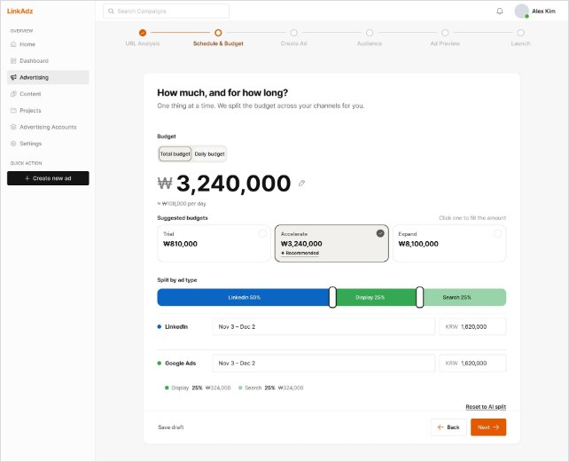
2Schedule & Budget

3Create Ad
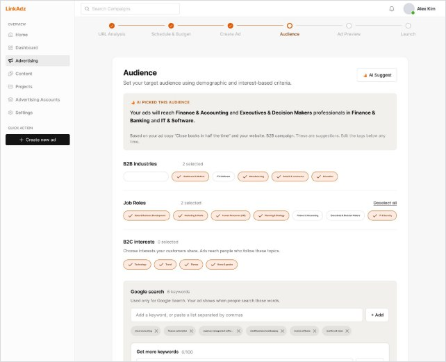
4Audience

5Ad Preview

6Launch
03
Thiết kế từng bước
Mỗi bước: vấn đề cũ, quyết định của mình, và lý do.
6 step nằm trong thư mục bên dưới. Mở ra để đọc từng step. Các bước thay đổi nhiều nhất được kể chi tiết. Bấm Trước / Sau để so sánh, bấm vào ảnh để phóng to.
01 · URL AnalysisChỉ dán một URL02 · Schedule & BudgetBốn phần, hai quy tắc03 · Create AdAd copy trước, creative sau04 · AudienceAI chọn, người dùng chỉnh05 · Ad PreviewKiểm tra từng kênh06 · LaunchNhìn lại lần cuối6 stepURL Analysis → LaunchMởRê chuột để xem lướt. Bấm vào một file để mở step đó.
Step 1 · URL Analysis · màn nhập URL
Màn đầu tiên chỉ còn một việc: dán URL
Trước. Ngoài ô nhập URL, màn này còn một card trạng thái kết nối các kênh và một card giới thiệu 5 việc AI sẽ làm. Khi quan sát trên công cụ theo dõi hành vi, mình thấy người dùng vào trang này thường bấm lung tung vào các card, bị phân tâm và không tập trung vào luồng chính là dán URL.
Quyết định của mình. Bỏ các card gây nhiễu, chỉ giữ ô nhập URL với một câu hỏi rõ ràng: "What would you like to advertise?". Việc kết nối kênh chuyển xuống bước Launch. Thêm chip Recent để chọn lại website đã dùng.
Vì sao. Người mới chưa cần biết kênh nào đã kết nối khi còn chưa tạo quảng cáo. Màn đầu tiên càng ít thứ để đọc, người dùng càng bắt đầu nhanh.
URL Analysis · flow 4 bước
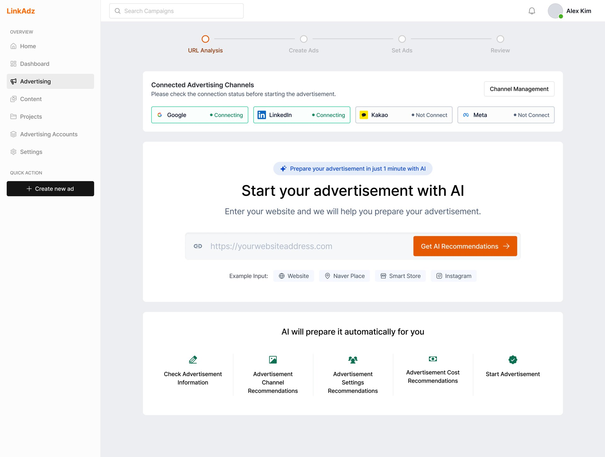
URL Analysis · nhập URL
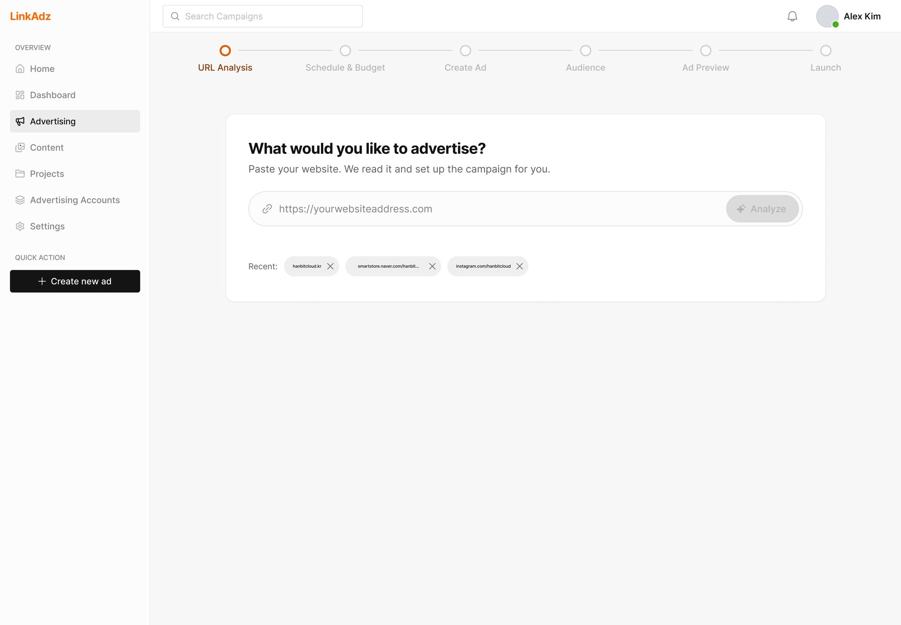
Step 1 · URL Analysis · màn kết quả
Kết quả AI là thứ để đọc và sửa
Trước. Bước này kết thúc bằng điểm "mức phù hợp" và danh sách kênh AI đề xuất. Người dùng không sửa được gì, và đôi khi hệ thống quét nhầm website.
Quyết định của mình. Tên doanh nghiệp, mô tả, keyword, ngôn ngữ và thị trường đều sửa trực tiếp được. Nút "Wrong page?" ở góc trên đưa người dùng về trang đầu để đổi website, phòng khi hệ thống quét nhầm.
Vì sao. Kết quả của AI hiếm khi đúng hoàn toàn. Cho sửa giúp người dùng thấy mình kiểm soát được, như HAX Toolkit của Microsoft và PAIR Guidebook của Google khuyến nghị.
URL Analysis · flow 4 bước
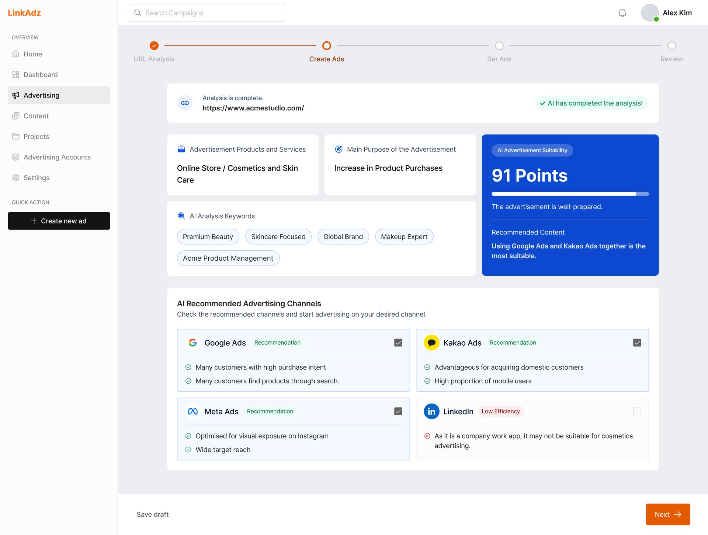
URL Analysis · kiểm tra thông tin doanh nghiệp

Flow Step 1: phân tích, kết quả và lỗi
Phân tích có thể lỗi theo bảy cách. Mỗi lỗi hiện thành alert dưới ô URL, kèm đường ra rõ ràng: sửa URL, thử lại, hoặc chờ tới khi có credit.
Xem userflow
- LandingNhập URLHoặc bấm chip Recent để điền sẵn
- Bấm Analyze
- LoadingPage scan và progress
- Phân tích thành công?
- Lỗi · alert dưới ô URL
- KhôngSửa URLPage not found, Page cannot be read, Login requiredLogin required mở dialog. Sau đó quay lại Nhập URL
- → Nhập URL
- Thử lạiTimeout, Server error, OfflineURL được giữ: bấm Analyze lần nữa
- Bị chặnOut of creditsChưa phân tích được cho tới khi có credit
- CóResultKiểm tra thông tin doanh nghiệpTên, mô tả, keyword, ngôn ngữ, thị trường
- Result · kiểm tra thông tin doanh nghiệp
- Đúng website?
- KhôngWrong page?Đổi websiteQuay lại Landing
- Không
- CóSửa inline thông tin
- Chọn kênh chạyMỗi kênh một card
- Kênh được hỗ trợ?
- KhôngCard disabledKhông chọn đượcChọn kênh khác
- Không
- CóTick kênhHiện dropdown ad type, summary bar cập nhật
- Có ít nhất 1 keyword?
- KhôngNext bị khóaAdd at least one keywordThêm keyword thì Next mở lại
- Không
- CóNextSang Step 2
Chạm để mở sơ đồ đầy đủ
Step 2 · Schedule & Budget
Một trang dài tách thành từng quyết định nhỏ
Trước. Lịch chạy, ngân sách, cài đặt theo nền tảng và đối tượng nằm chung trên một trang Set Ads rất dài.
Quyết định của mình. Phần đối tượng tách ra thành Step 4 riêng. Step 2 chỉ còn lịch và ngân sách, và các phần hiện dần: Duration, Schedule, Budget rồi Review. Màn ngân sách gợi ý ba mức; phần chia ngân sách theo kênh chỉ hiện khi đã chọn xong Budget.
Vì sao. Người mới không phải thấy mọi trường cùng lúc, và mỗi màn chỉ có một hành động. Cách này theo nguyên tắc "one thing per page" của GOV.UK Design System và progressive disclosure của Nielsen Norman Group.
Set Ads · một trang dài

Step 2 · Schedule & Budget
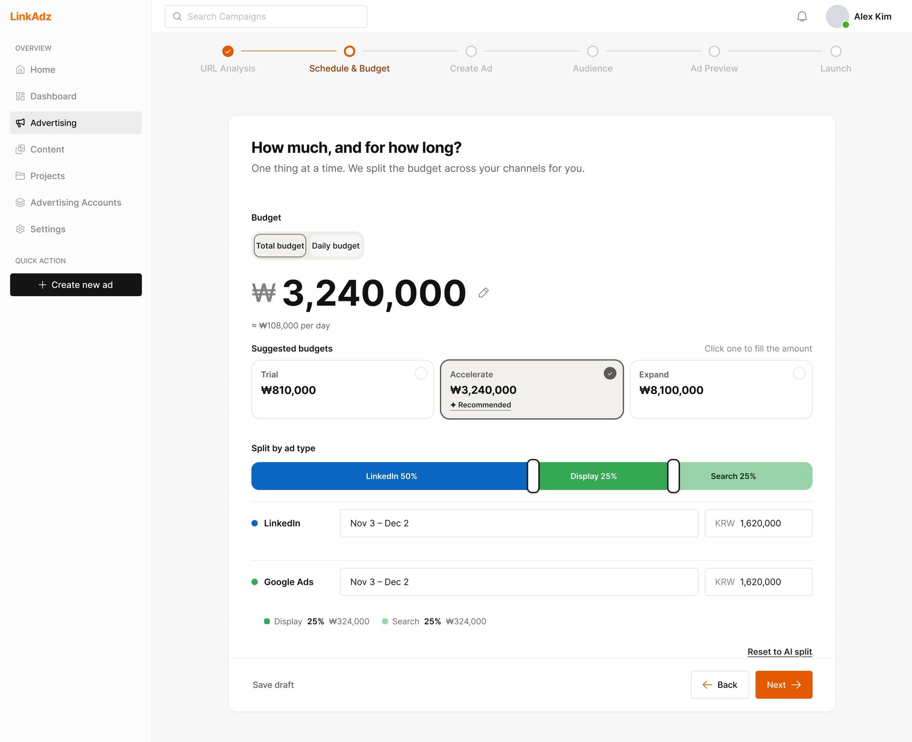
Step 2 hiện ra như thế nào
Mỗi lần chỉ một câu hỏi. Bấm Next thì phần tiếp theo mới hiện, cuối cùng là một màn Review để xem lại và sửa từng dòng.
Duration: chạy bao lâu

Schedule: chạy giờ nào

Budget: chưa chọn, Next khóa

Budget: chọn xong, hiện phần chia

Review: xem lại và sửa

User flow Step 2: bốn phần, hai điều kiện
Schedule và Budget đều có điều kiện để mở khóa Next, và gợi ý nêu đúng vấn đề. Mọi thay đổi đều tự lưu.
Xem userflow
- NextTừ Step 1
- 1/4 · Duration
- Chọn 7, 30, 90 ngày hoặc Custom
- Custom?
- Không7, 30 hoặc 90 ngàyBắt đầu hôm nayẨn các ô ngày
- → All day, hoặc Custom days and hours
- Không
- CóCustomMở lịch để chọn ngày bắt đầuNgày trước hôm nay bị disable
- Ngày kết thúc là tùy chọnKhông chọn: chạy Ongoing đến khi tự dừng
- 2/4 · Schedule
- All day, hoặc Custom days and hours
- All day, hoặc có ít nhất 1 giờ?
- KhôngNext bị khóaSelect at least one hourChọn một ô hoặc preset (Morning, Evening, Night) thì Next mở
- Không
- 3/4 · Budget
- CóChọn Trial, Accelerate hoặc ExpandAccelerate là gói khuyên dùng. Hoặc nhập tổng
- Tổng nằm trong khoảng cho phép?
- KhôngNext bị khóaMinimum total is ₩…, or Maximum is ₩50,000,000Dưới mức tối thiểu thì không thẻ nào được chọn
- Không
- CóMỗi kênh đạt mức daily tối thiểu?
- KhôngNext bị khóaMinimum daily ₩…/dayÔ của kênh chuyển đỏ
- Không
- 4/4 · Review
- CóTóm tắtDuration, schedule, budget và split theo ad type. Edit ở một dòng quay về sub-step đó
- Continue to Create AdSang Step 3a
Mọi thay đổi đều autosave. Nhãn của Next đổi theo từng sub-step.
Chạm để mở sơ đồ đầy đủ
Step 3a · Create Ad, phần 1
Ad copy đi trước, để cả flow hiểu campaign nói về điều gì
Trước. Flow cũ không có phần copy. Nội dung lấy từ việc quét URL nên khá chung chung, và người dùng phải chọn cách tạo quảng cáo trước khi biết mình muốn nói gì.
Quyết định của mình. Create Ad bắt đầu bằng một ô prompt: người dùng mô tả điều muốn quảng cáo, ví dụ một ưu đãi hay mùa lễ hội, hoặc để trống để dùng nội dung website. Website từ Step 1 được gắn sẵn trong ô, kèm vài prompt gợi ý lấy từ chính website. AI viết ba phiên bản; người dùng chọn một, đặt CTA và đường dẫn một lần cho mọi kênh, rồi xem copy trên từng kênh.
Vì sao. Tinh gọn nhưng vẫn phải ra kết quả tốt, không chỉ chạy được quảng cáo. Ô này cũng cho app biết campaign nói về điều gì, để Step 4 gợi ý đối tượng phù hợp.
Create Ads · chọn cách tạo

Step 3a · ô prompt
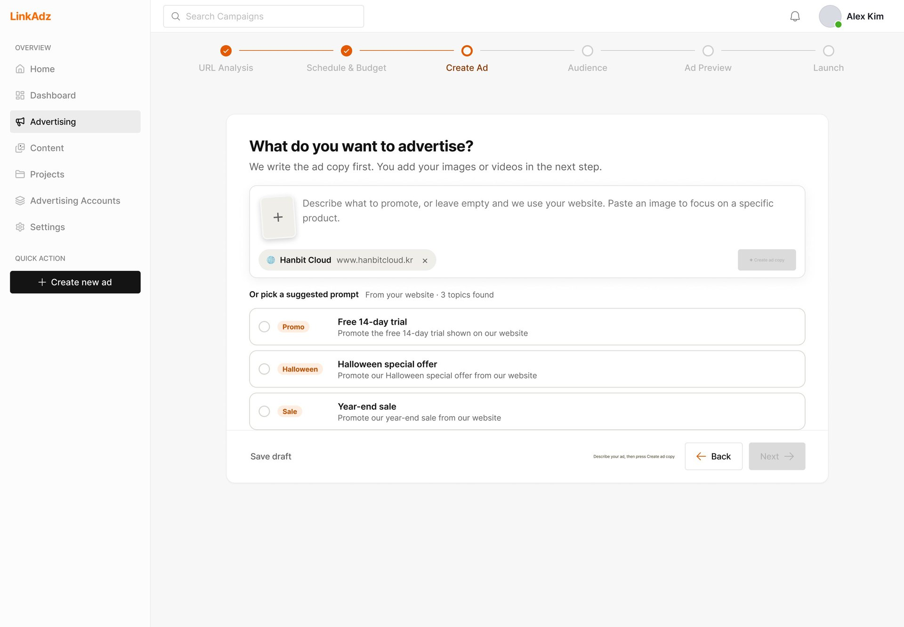
Step 3a từ ô prompt đến ad copy
Người dùng mô tả điều muốn quảng cáo, hoặc chọn một prompt gợi ý. AI viết ba phiên bản, người dùng chọn một và kiểm tra trên từng kênh.
Ô prompt trống
Đã nhập prompt
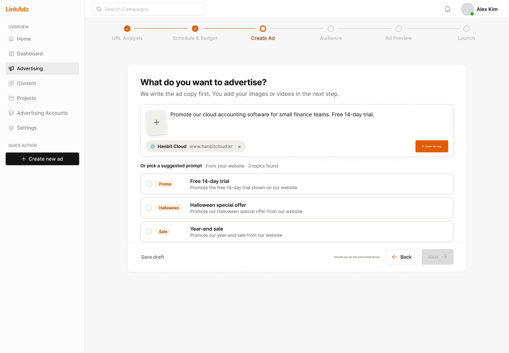
Đang viết ad copy

Chọn một trong ba phiên bản
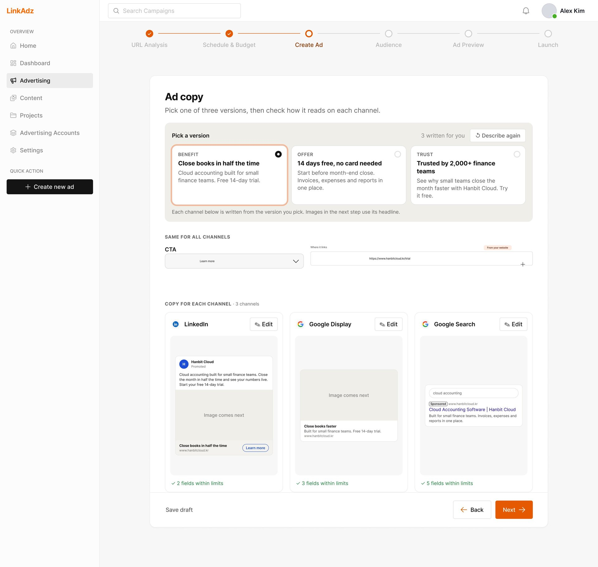
Copy vượt giới hạn: Next khóa

Sửa copy cho một kênh
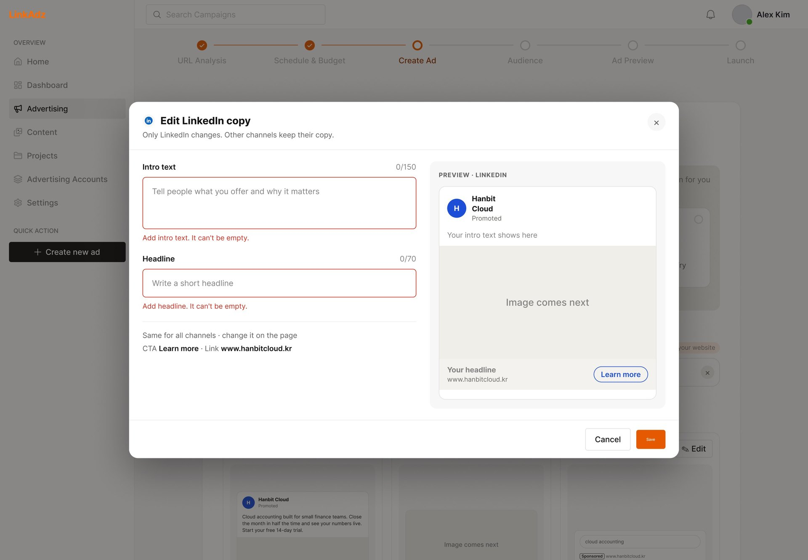
User flow Step 3a: prompt, kết quả và giới hạn ad copy
Next bị khóa cho đến khi có prompt, link hợp lệ và copy nằm trong giới hạn của mọi kênh. Sửa copy của một kênh không ảnh hưởng các kênh khác.
Xem userflow
- Continue to Create AdTừ Step 2
- IdleWhat do you want to advertise?Ô prompt, chip website, topic từ website, suggested prompts
- Điền promptBấm topic chip (Promo, Halloween, Sale), chọn một suggested prompt, hoặc tự gõ
- Prompt có nội dung?
- KhôngNext bị khóaDescribe your ad, then press Create ad copy
- Không
- CóBấm Create ad copy
- LoadingWriting your ad copyMột màn, ẩn footer
- Result · chọn version rồi kiểm tra từng kênh
- ResultChọn một trong ba versionBenefit, Offer hoặc Trust. Describe again quay về prompt
- Same for all channelsCTA (mặc định Learn more) và Where it links (URL)
- Link hợp lệ?
- KhôngNext bị khóaFix the link where your ad goes
- Không
- CóMỗi kênh một cardPreview, Edit, và N fields within limits
- Edit popup · chỉ đổi một kênh
- EditEdit LinkedIn copyField có counter (137/150, 28/70) và preview live
- Cancel khi có thay đổi chưa lưu?
- KhôngPopup đóng ngay
- Không
- CóDiscard your changes to LinkedIn?Hiện dialog xác nhận trước
- Đã sửa field nào chưa?
- KhôngSave bị khóaTooltip: No changes yet
- Không
- CóSaveĐóng popup, card của kênh cập nhật. Hiện Reset to AI version
- Mọi field trong giới hạn?
- KhôngNext bị khóaHeadline needs a fixGợi ýFill in Headline for LinkedIn
- Không
- CóNextSang Step 3b
Bấm lại suggestion đã chọn thì prompt rỗng. × trên chip website: không dùng nội dung website. + thêm ảnh tham chiếu.
Giới hạn ký tự khác nhau theo từng nền tảng.
Chạm để mở sơ đồ đầy đủ
Step 3b · Create Ad, phần 2
AI Studio, upload ảnh và upload video dùng chung một UI
Trước. Người dùng phải chọn trước giữa "AI tạo" và "tự tải ảnh", hai cách có giao diện khác nhau, nằm chung một trang dài với nội dung quảng cáo.
Quyết định của mình. Creatives đến sau, khi copy đã xong. Ba nguồn giống nhau từ panel, popover đến modal. Mỗi thiết kế AI tạo ra được gắn nhãn những kênh phù hợp với kích thước của nó. Loading state mới cho lúc AI tạo ảnh và lúc upload.
Vì sao. Học một lần, dùng cho cả ba nguồn. Nhãn kênh giúp người mới biết ngay ảnh nào chạy được ở đâu.
Create Ads · AI Studio
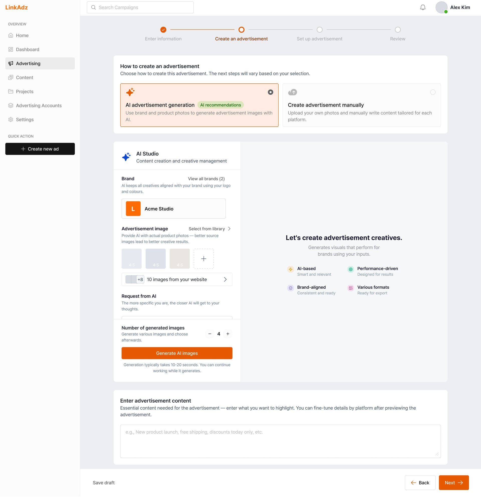
Create Ads · tự tải ảnh

Step 3b · AI Studio

Step 3b · AI Studio
Người dùng chọn cách thêm creative, chỉnh cài đặt ảnh, rồi bấm Generate. Nếu tạo lỗi, Try again giữ nguyên prompt.
Chọn cách thêm creative
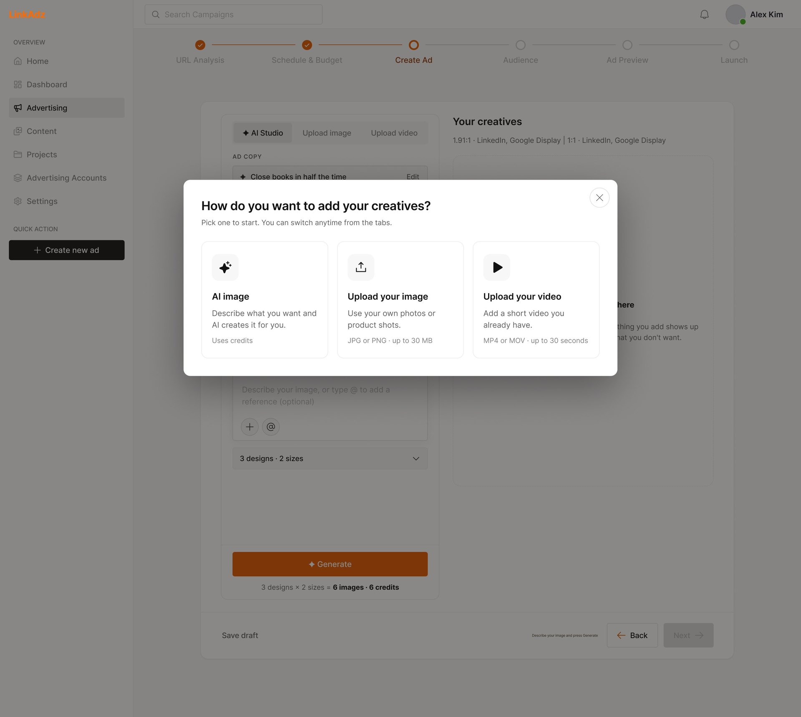
AI Studio trống

Popover cài đặt ảnh
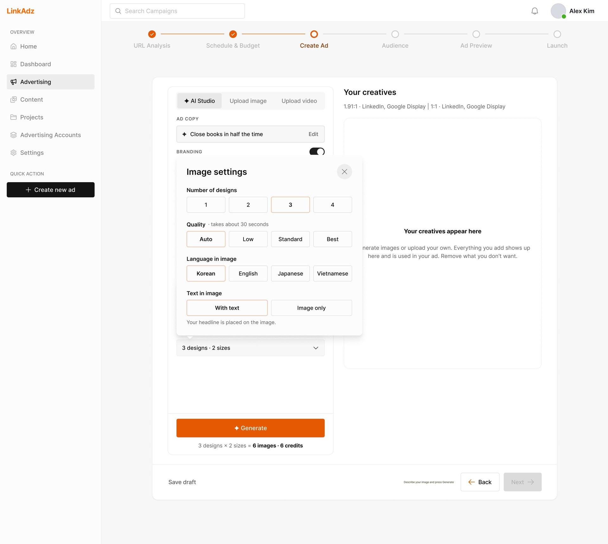
AI đang tạo

Kết quả, gắn nhãn kênh
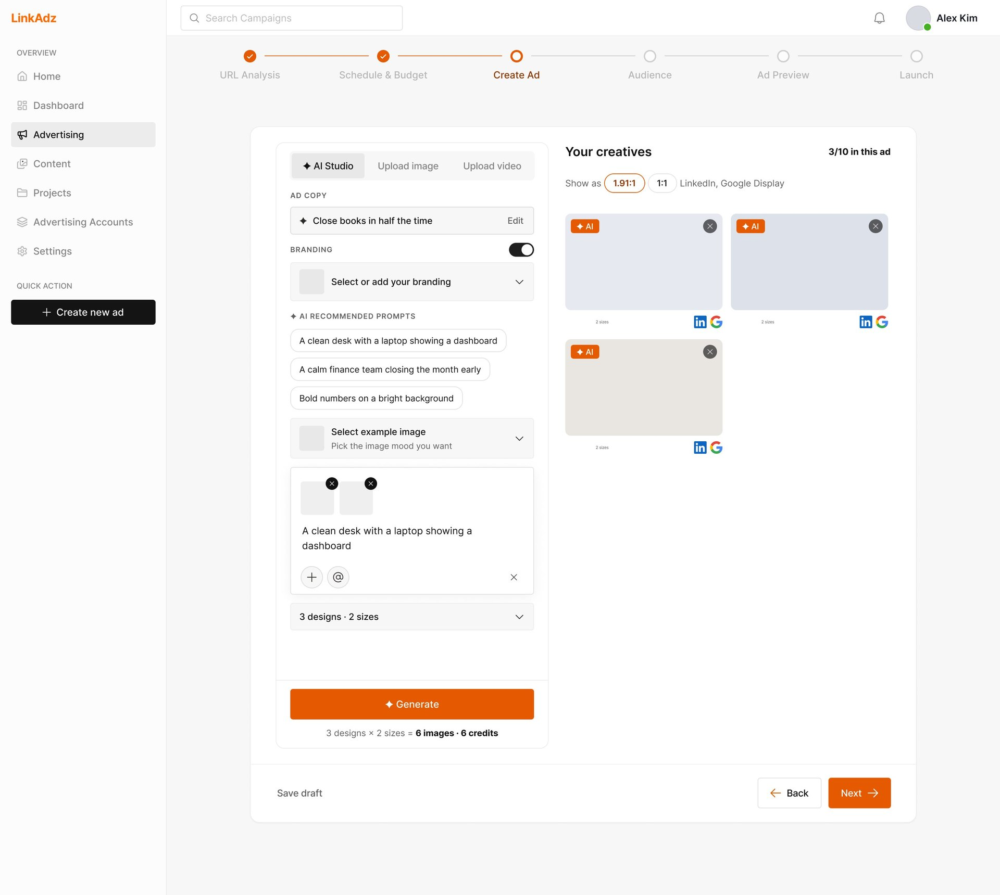
Tạo lỗi
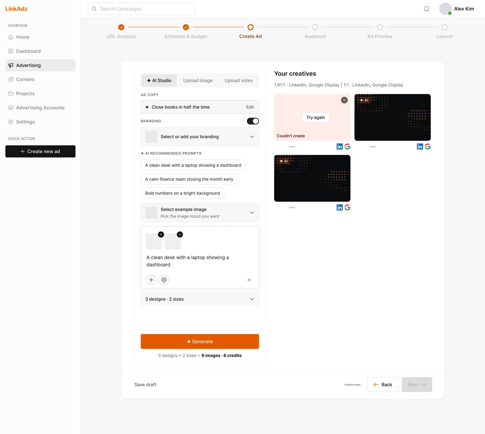
User flow Step 3b: AI Studio
Người dùng chọn AI Studio hoặc Upload. Trong AI Studio, họ chọn branding, ảnh mẫu và nhập prompt rồi bấm Generate. Nếu tạo lỗi, Try again giữ nguyên prompt.
Xem userflow
- NextTừ Step 3a
- DialogHow do you want to add your creatives?
- Chọn cách nào?
- UploadUpload image or Upload videoXem flow upload bên dưới
- Upload
- AI Studio · cột trái
- AI StudioBrandingBa trạng tháiNo brand: mở picker. Selected: brand card có Change và ×. Off: không áp brand
- Example imageTùy chọn, tối đa 3 ảnhMỗi ảnh có ×, đếm n/3
- Prompt boxMô tả creative+ đính ảnh. @ chèn ảnh thành chip inline
- Đính ảnh tham chiếu
- +Bấm + để đính ảnh
- Đã đủ 5 reference?
- CóToastUp to 5 references
- Có
- KhôngThumbUploading
- Ảnh hợp lệ?
- KhôngThumb errorIcon cảnh báoBấm × để bỏ
- Không
- CóThumb nằm trên ô prompt
- Generate · cột phải, Your creatives
- Bấm GenerateFooter cố định, ví dụ 6 images · 6 credits
- GeneratingThẻ CreatingCó hiệu ứng dot wave
- Tạo thành công?
- KhôngGenerate errorCouldn't createCó Try again và ×
- ×Bỏ thẻ lỗi
- Try againChạy lại Generating với cùng prompt. Vẫn lỗi sau khoảng 30 giây thì hiện lại lỗi
- Không
- CóResultsCreative card có nhãn AIx/10 in this ad. Bấm thẻ để mở Image detail
Dòng 3 designs · 2 sizes mở popover Image settings.
Chạm để mở sơ đồ đầy đủ
Step 3b · Upload ảnh và video
Upload dùng chung bố cục với AI Studio: panel bên trái, creative bên phải. Ảnh tự cắt theo từng kích thước, người dùng chỉnh lại nếu cần.
Upload ảnh
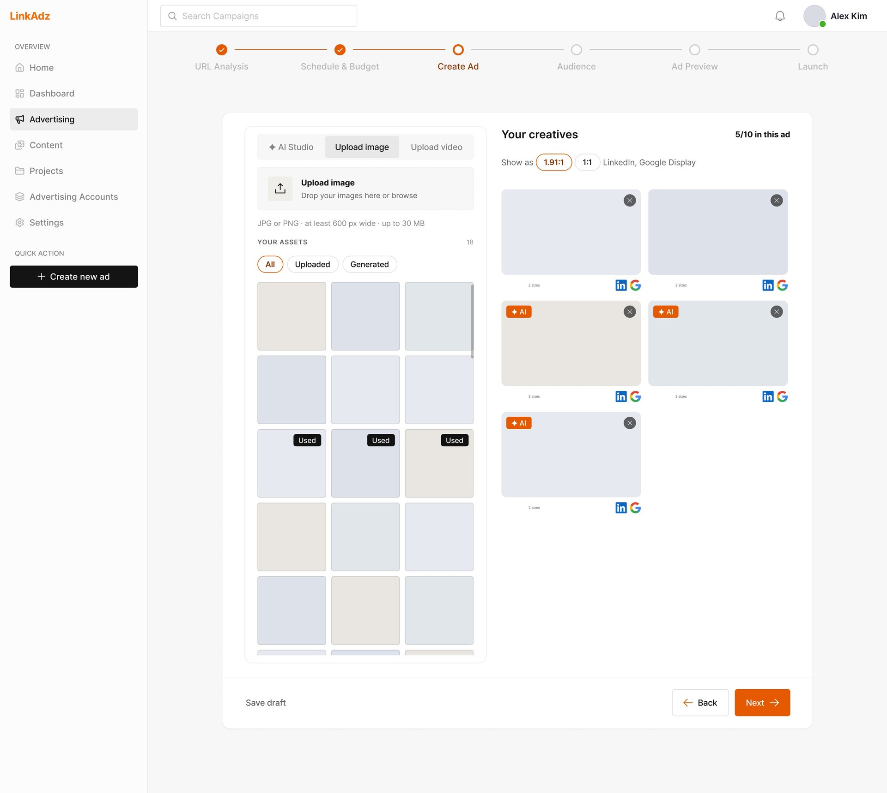
Chi tiết ảnh: tự cắt theo kích thước

Chỉnh crop
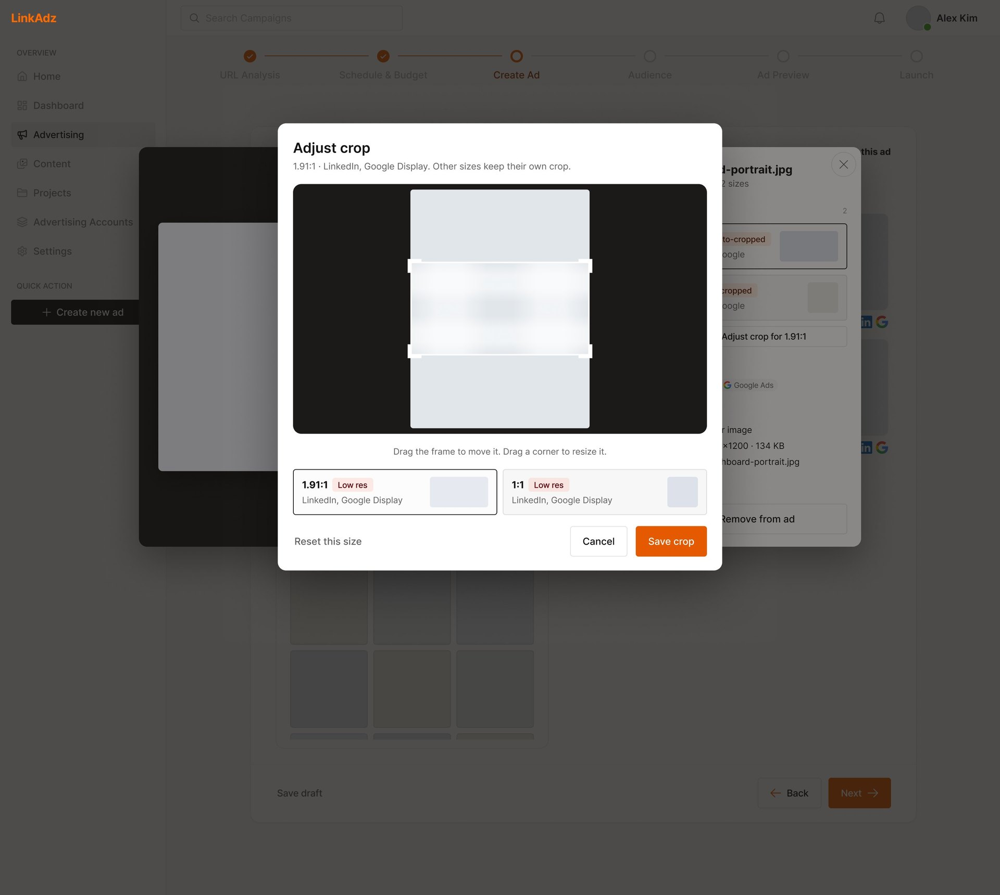
Upload video

File bị từ chối
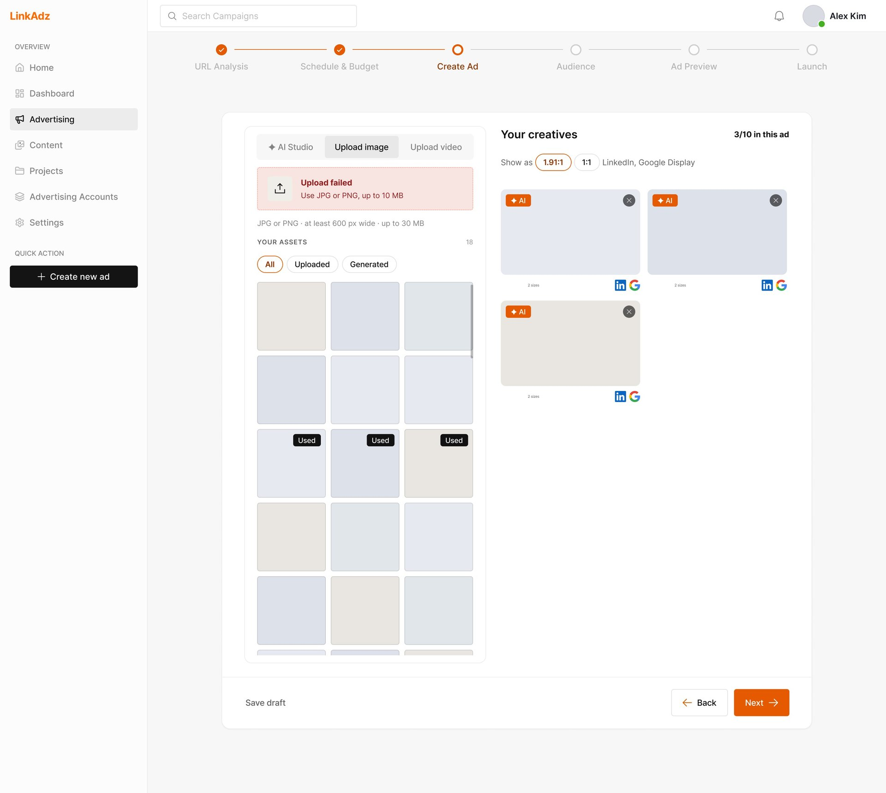
Upload lỗi

Google không dùng video: Next khóa
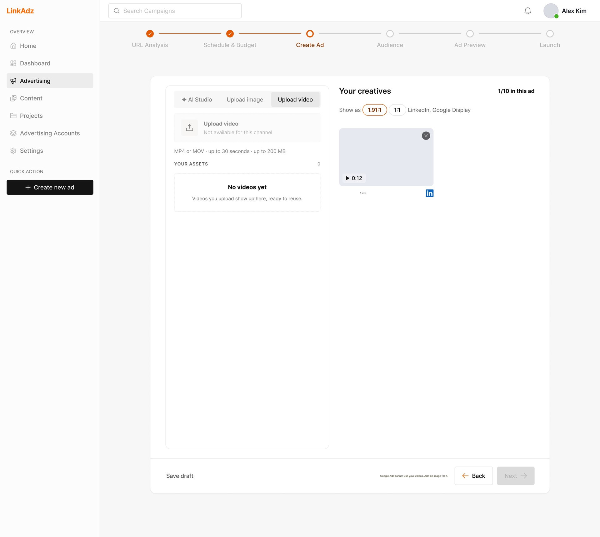
User flow Step 3b: upload, assets và crop
Lỗi upload hiện ở hai nơi: dropzone khi file không hợp lệ, và tile khi upload thất bại. Next mở khi có ít nhất một creative dùng được cho mọi kênh của ad.
Xem userflow
- Upload
- Chọn tab nào?
- VideoTab VideoMP4 hoặc MOVTối đa 30 giây, 200 MB
- Ad có kênh Google?
- Không→ Kéo file vào
- CóDropzone disabledNot available for this channelNext bị khóa
- Video
- ImageKéo file vàoDrag over, rồi Drop to upload. Tab Image: JPG hoặc PNG
- File hợp lệ (định dạng, dung lượng)?
- KhôngDropzone errorUpload failedUse JPG or PNG, up to 10 MB
- Không
- CóTileUploadingBorder beam. Video hiện Processing
- Upload thành công?
- KhôngTile errorUpload failed và ×Xóa rồi upload lại. Không có Retry
- Không
- CóTile vào Your assets
- Your assets · image detail và crop
- Your assetsChip lọc: All, Uploaded, Generated. Rỗng: No assets yet hoặc No videos yet
- Bấm thân tileMở Image detail
- Đã nằm trong ad?
- CóIn adNút: Remove from ad
- Có
- KhôngNot in adNút: Use in ad
- Adjust cropKéo khung crop theo từng size, rồi Save crop. Size có thể mang tag Low res hoặc Auto-cropped
- Hover hoặc focus tileNút + thêm nhanh. Tile đã thêm hiện nhãn Used
- Có creative dùng được cho mọi kênh?
- KhôngNext bị khóaChưa có creative hợp mọi kênhVí dụ: chỉ có video mà ad có kênh Google
- Không
- CóNextSang Step 4
Tối đa 10 creative trong một ad (x/10 in this ad).
Chạm để mở sơ đồ đầy đủ
Step 4 · Audience
AI chọn sẵn đối tượng, người dùng chỉnh lại
Trước. Đối tượng nằm chung trang Set Ads. Người mới phải tự chọn ngành, chức danh, sở thích và keyword từ những danh sách dài, trong khi họ thiếu kiến thức để chọn.
Quyết định của mình. Audience thành bước riêng, đặt sau Create Ad. AI chọn sẵn đối tượng dựa trên ad copy và website, kèm một câu tóm tắt "quảng cáo sẽ đến với ai". Mọi tag đều sửa được. Next mở khi có ngành hoặc chức danh, và ít nhất một search keyword.
Vì sao. Người mới không phải bắt đầu từ con số không. Vì ad copy đã có từ Step 3a, gợi ý của AI sát với campaign hơn.
Set Ads · phần đối tượng
Step 4 · Audience
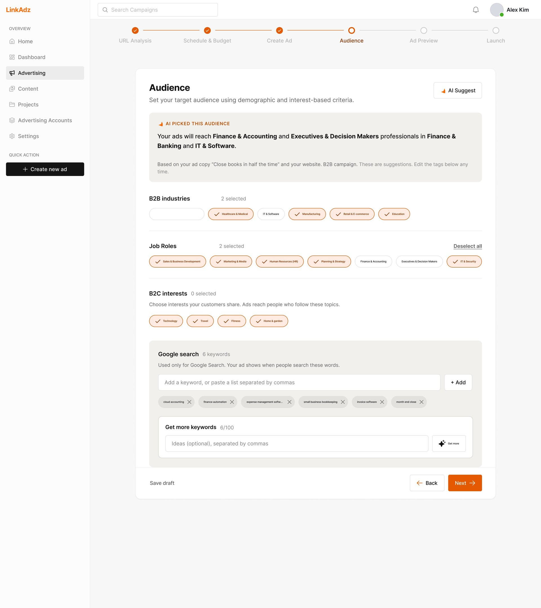
Step 4 hiện ra như thế nào
AI đọc ad copy và website, viết câu tóm tắt đối tượng, rồi chọn sẵn các tag để người dùng chỉnh.
Đang tải
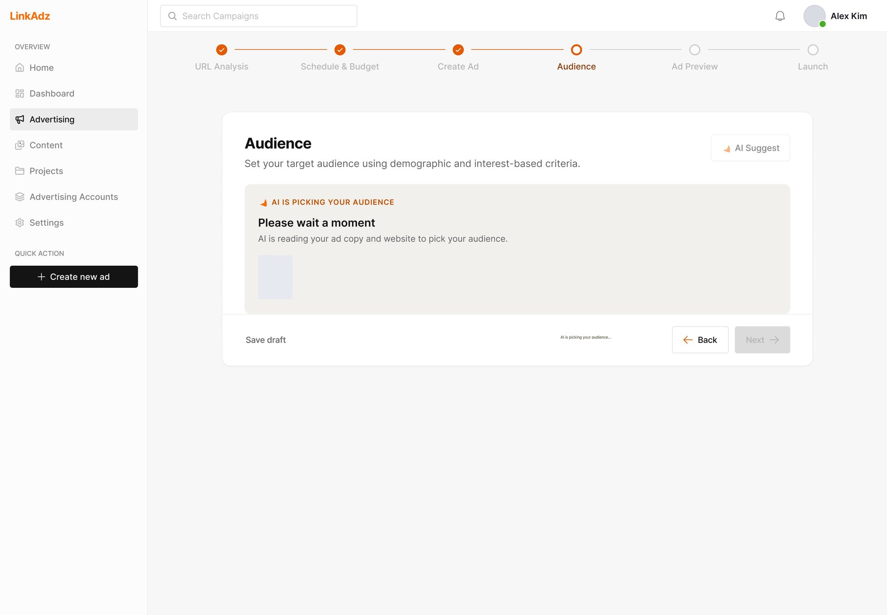
Câu tóm tắt hiện dần
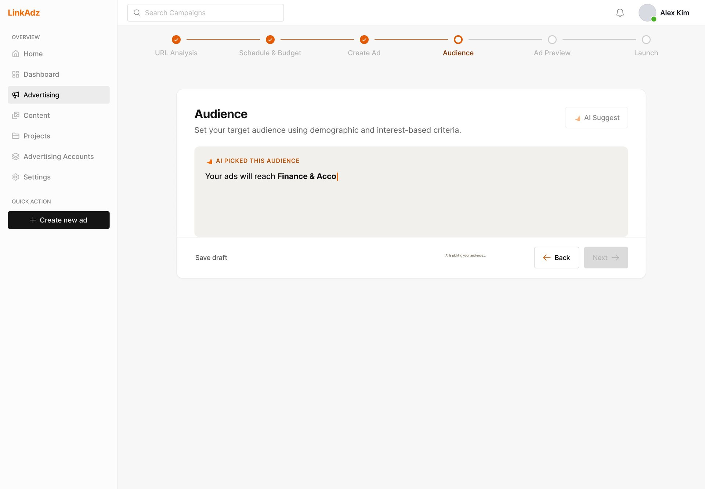
Kết quả: AI chọn sẵn

Next khóa: thiếu search keyword
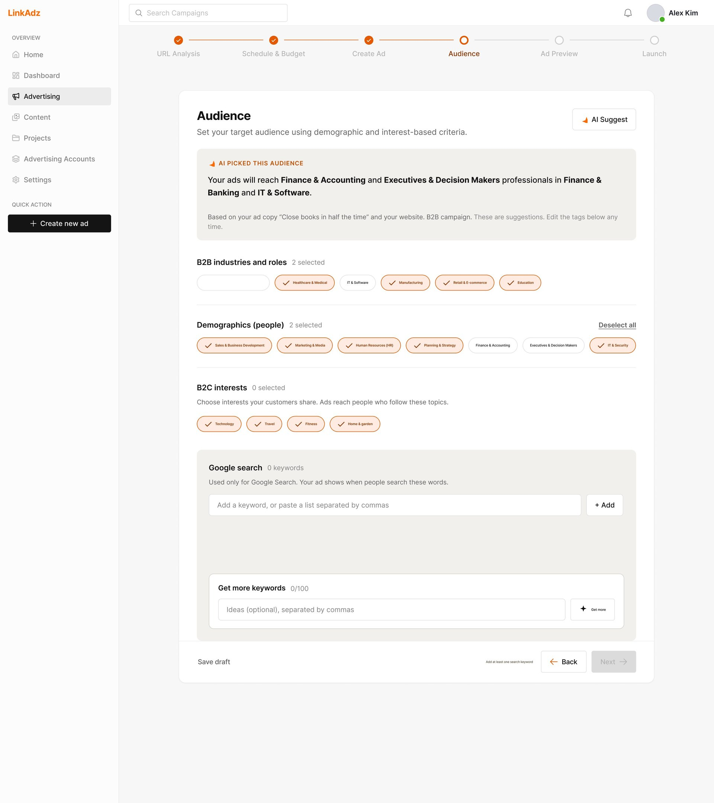
User flow Step 4: AI chọn, người dùng chỉnh
AI chọn đối tượng trong lúc màn hình loading, sau đó người dùng chỉnh lại. Next chỉ mở khi có từ khóa search và ít nhất một ngành hoặc chức danh.
Xem userflow
- NextTừ Step 3b
- LoadingAI is picking your audienceMascot đi qua 5 mốc, khoảng 8 giây. AI Suggest và Next bị khóa
- Typing revealCâu tóm tắt gõ từng ký tựKèm tag AI picked this audience
- ResultCâu tóm tắt và 4 nhóm chipMọi thay đổi đều autosave
- AI SuggestChạy lại gợi ý và quay về Loading
- Chỉnh audience
- Google search keywordsGõ một keyword hoặc dán danh sách ngăn bởi dấu phẩy, rồi + Add
- Ideas8 gợi ý để chọnGenerating làm nút disabled. Đang chọn: 3 đã thêm, 5 còn mở
- Đã đủ 100 keyword?
- CóLimit reached 100/100Không thêm được nữa
- Có
- KhôngNhiều keyword thu gọn còn 2 hàngShow all 43 / Show less
- Chỉnh chipB2B industries and roles, Demographics, B2C interests: bấm chip để chọn hoặc bỏ. Demographics có Deselect all
- Khi nào Next mở
- Có ít nhất 1 search keyword?
- KhôngNext bị khóaAdd at least one search keyword
- Không
- CóCó ít nhất 1 industry hoặc role?
- KhôngNext bị khóaGợi ý cho industry hoặc roleChỉ hiện sau khi đã có keyword
- Không
- CóContinue to Ad PreviewSang Step 5
Chạm để mở sơ đồ đầy đủ
Step 5 · Ad Preview
Kiểm tra từng kênh ở một chỗ
Trước. Phần xem trước là một loạt thẻ quảng cáo, mỗi nền tảng một thẻ, kích thước không đồng đều.
Quyết định của mình. Liệt kê từng nền tảng cùng nơi quảng cáo hiển thị và ad account; thêm phần chọn creative để review đồng loạt. Card các kênh được căn cùng kích thước.
Vì sao. Người dùng xem mọi kênh trong một lần, không có card quá nhỏ hay quá to làm lệch sự chú ý.
Preview · mỗi nền tảng một thẻ
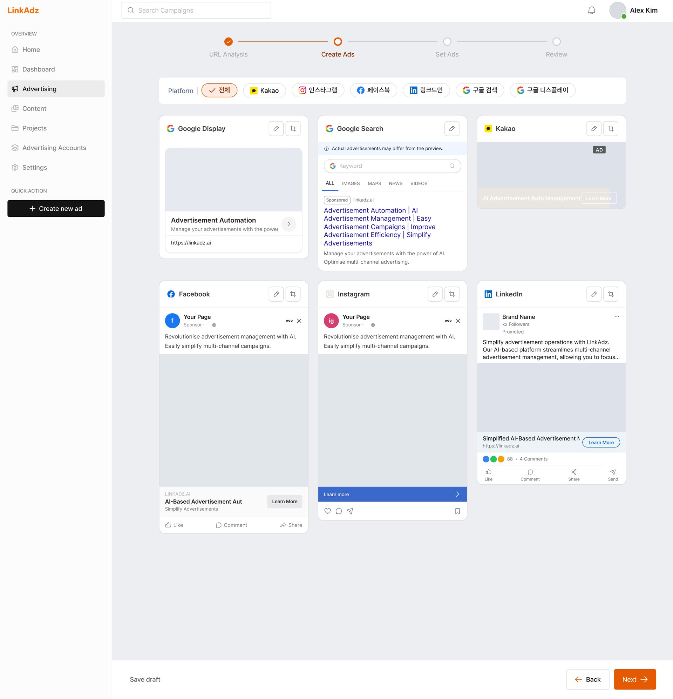
Step 5 · Ad Preview
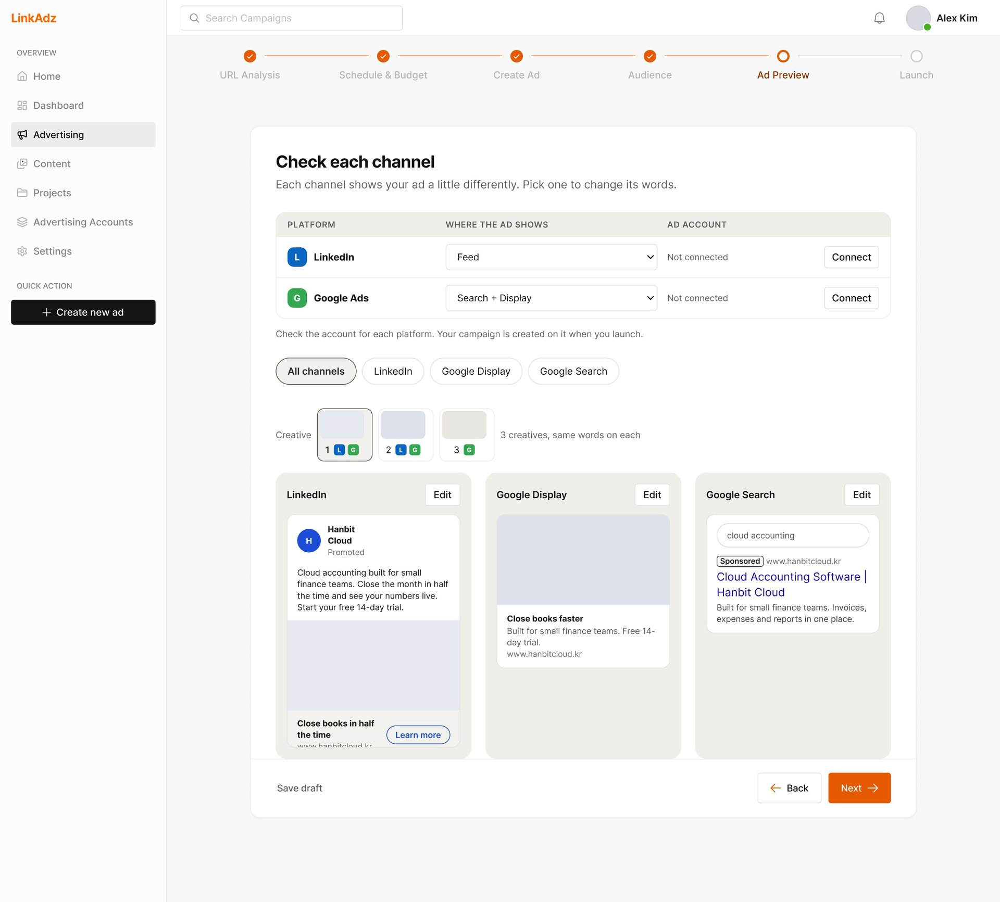
Step 5 · các trạng thái
Mỗi kênh kết nối độc lập, nên một kênh lỗi không chặn các kênh khác.
Chọn creative để xem
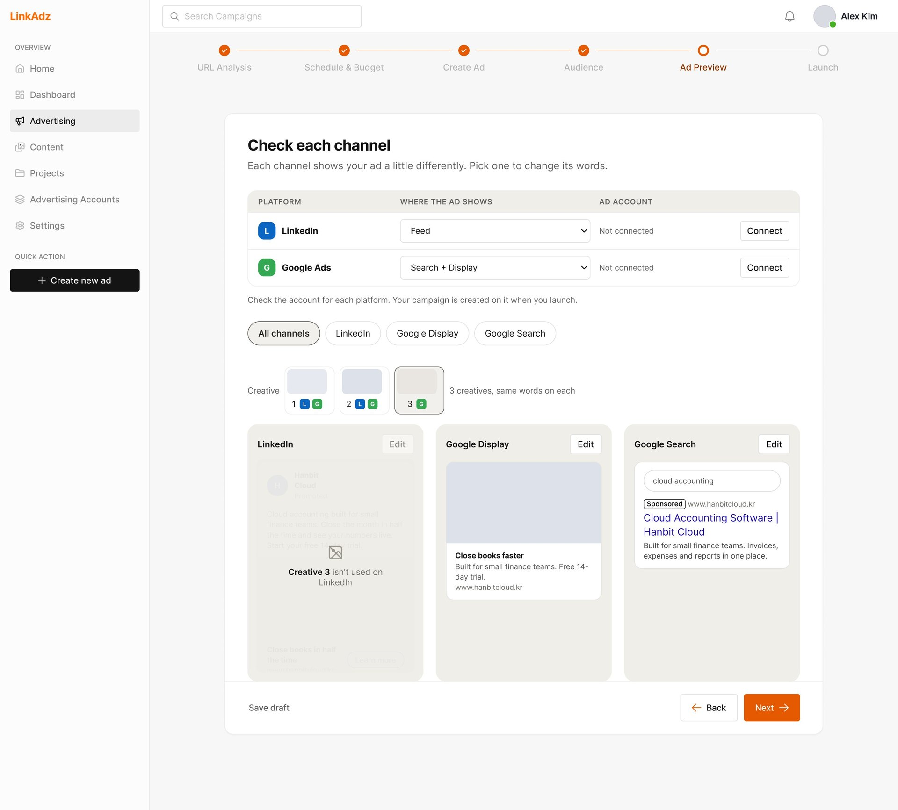
Sửa ad của một kênh
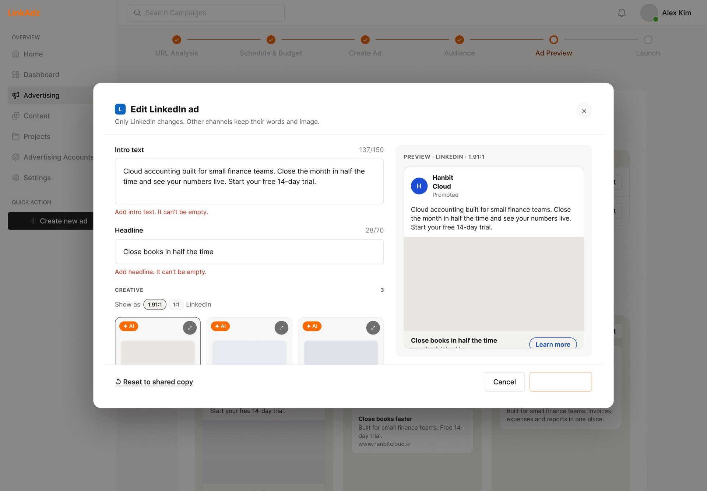
Chi tiết creative
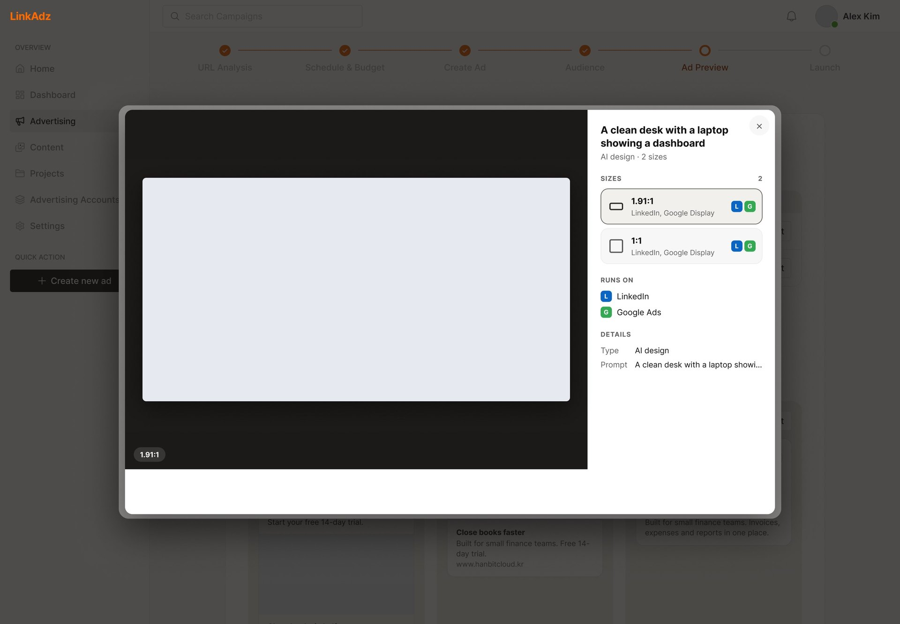
Đang kết nối kênh

Kết nối thất bại
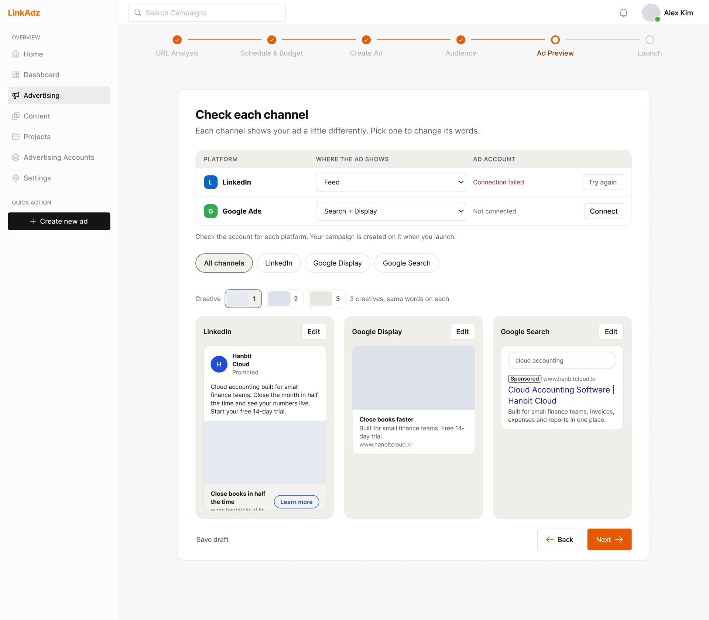
User flow Step 5: kiểm tra, kết nối và chỉnh sửa
Mỗi kênh kết nối độc lập, nên một kênh lỗi không chặn các kênh khác. Next ở bước này luôn bấm được, việc kiểm tra kết nối sẽ làm lại ở Launch.
Xem userflow
- Continue to Ad PreviewTừ Step 4
- Check each channelBảng Platform, Where the ad shows và Ad account. Tabs: All channels, LinkedIn, Google Display, Google Search
- Kết nối ad account từng kênh
- Kênh đã kết nối?
- KhôngNot connectedHiện nút Connect
- Bấm ConnectConnecting… Nút disabled khoảng 700 ms
- Kết nối thành công?
- KhôngConnection failedChữ đỏ. Nút thành Try again
- Try againLặp lại Connecting. Kênh khác kết nối độc lập
- → Bấm Connect
- Không
- CóĐã kết nốiDropdown Ad account thay cho nút
- Không
- CóAd account dropdownVí dụ một company page, không có dấu tick
- Edit ad popup · chỉ một kênh
- EditEdit LinkedIn adIntro text 137/150, Headline 28/70, creative picker
- Show asChip 1.91:1 và 1:1 (nền tảng có hai tỉ lệ), lưới tile vuông 3 cột
- Bấm một tileÁp vào preview bên phải, có dấu tick. Tile AI có nhãn AI
- SaveĐóng popup, preview của kênh cập nhật
- Hover tileNút mở rộng mở Detail modal
- Detail modalNằm trên popup: ảnh lớn, size, Runs on, chi tiết
- Crop dialogLớp trên cùng. Esc đóng lớp trên cùng trước
- NextSang Step 6Luôn bấm được, kể cả khi chưa kết nối kênh nào
- Creatives
- Creative chips 1, 2, 3Ba creative, cùng nội dung trên mỗi kênh
- Chọn creative 3Card LinkedIn hiện unused
Dropdown Where the ad shows luôn hiện, dù đã kết nối hay chưa.
Chạm để mở sơ đồ đầy đủ
Mới · Step 6
Launch: nhìn lại lần cuối
Một bản tóm tắt gồm doanh nghiệp, lịch và ngân sách, đối tượng, ad copy và creatives, mỗi phần có Edit để quay lại sửa trước khi chạy. Sau khi launch có màn kết quả để người dùng biết campaign đang ở đâu.

Step 6 · các trạng thái
Nếu còn kênh chưa kết nối, một modal yêu cầu kết nối trước khi launch. Sau khi launch, người dùng thấy từng kênh được gửi đi.
Chọn nơi chạy quảng cáo

Kết nối lỗi trong dialog
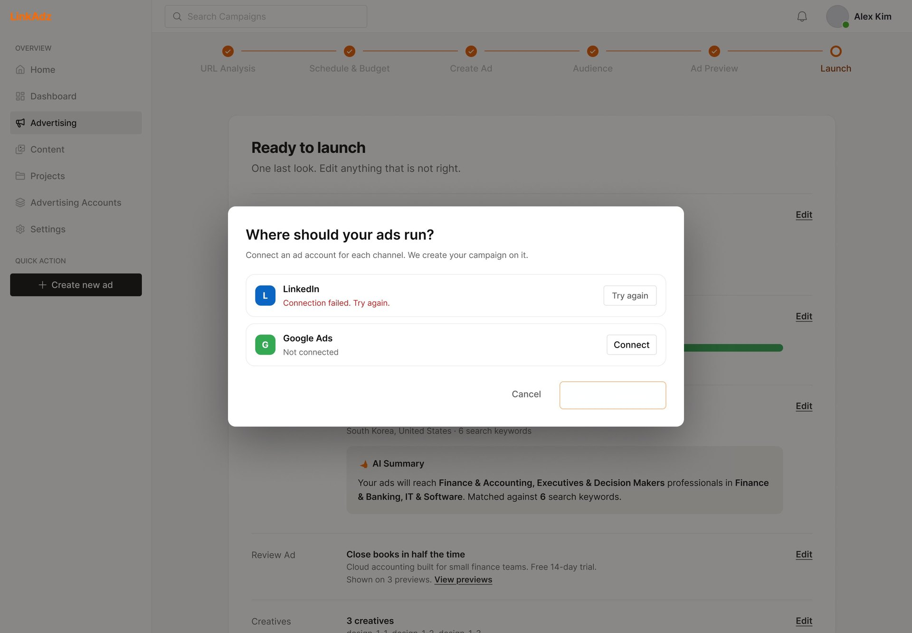
Đang launch
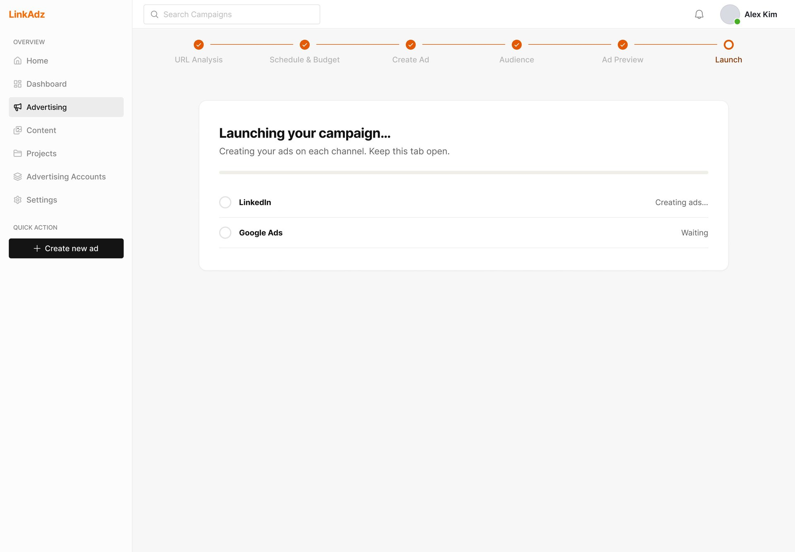
Campaign đã gửi

User flow Step 6: launch
Nếu mọi kênh đã kết nối thì launch bắt đầu ngay. Nếu chưa, một modal yêu cầu kết nối các kênh còn thiếu trước, và nút Launch bị khóa cho đến khi kết nối đủ.
Xem userflow
- NextTừ Step 5
- Ready to launchOne last lookTóm tắt Business, Budget and time, Audience, Ad, Creatives
- Edit, hoặc View previewsEdit ở một dòng quay về step đó. View previews hiện 3 preview của ad
- Bấm Launch campaign
- Mọi kênh đã kết nối?
- Modal · Where should your ads run?
- KhôngMỗi kênh một hàngLogo, name, Not connected, Connect
- Cancel, hoặc click ra ngoàiĐóng modal, về Ready to launch
- Bấm ConnectConnecting… Disabled khoảng 700 ms
- Kết nối thành công?
- KhôngConnection failed. Try again.Nút thành Try again. Kênh khác giữ trạng thái riêng
- Không
- CóHàng đã kết nốiHai dropdown: Where ads show, Ad account
- Mọi kênh đã kết nối?
- KhôngLaunch bị khóaMờ 50%Bấm thì hiện toast Connect each channel first
- Có→ Keep this tab open
- Không
- CóLaunching your campaignKeep this tab openMỗi kênh lần lượt (850 ms): Creating ads rồi Submitted. Progress bar tăng đến 100%
- XongCampaign submittedMỗi kênh duyệt ad, thường trong 24 giờ, có email khi live
Màn Launching ẩn stepper và footer. Ở Campaign submitted, stepper hiện mọi step đã xong.
Chạm để mở sơ đồ đầy đủ
04
Feedback → quyết định
Feedback không áp dụng nguyên xi.
Sau bản 6 bước, CTO, Director và FE dev tiếp tục góp ý. Với mỗi góp ý, mình cân nhắc UX trước, rồi mang lý do và một phương án thay thế đến buổi trao đổi, thay vì chỉ đồng ý hay từ chối.
Feedback · CTO
Sau khi sửa inline thông tin doanh nghiệp, hiện một nút chữ "Save" để người dùng bấm lưu.
Đề xuất của mình
Enter để lưu, bấm ra ngoài tự lưu (Saving → Saved), Esc để hủy. Không thêm nút Save.
Lý do
Saving/Saved ở cuối ô là trạng thái, không phải nút để bấm. Việc lưu đã xảy ra khi nhấn Enter hoặc bấm ra ngoài, nên thêm nút Save chỉ tạo thêm một thao tác thừa. Mô tả giới hạn 120 ký tự nên ô một dòng là đủ.
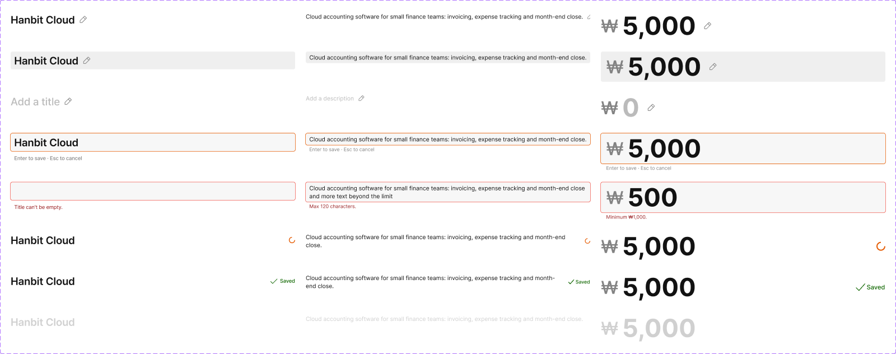
Feedback từ FE dev: màn hình lớn thừa khoảng trống
Vấn đề
Card cố định 960px ở mọi step. Ở 1920px thừa khoảng 360px mỗi bên; laptop cao 864px thì Step 3b phải cuộn.
Một rule thay vì vẽ từng kích thước
Card = min(100%, max(960, 5/6 vùng nội dung)), workspace tối đa 1600px, lưới auto-fill. Mức 1440px giữ nguyên nên 193 frame hiện có không phải vẽ lại.
Đánh đổi đã chấp nhận
Không có frame 1920 trong Figma; dev đọc rule qua annotation. Mình dựng thêm demo tương tác (rộng 1024 – 2560) cho dev và QA kiểm tra.
Rule áp lên từng kích thước màn hình
Mức 1440px giữ nguyên như Figma. Màn nhỏ hơn thì card co lại, màn lớn hơn thì card giãn ra và lưới thêm cột, tối đa 1600px.
05
Thiết kế cả lúc mọi thứ không suôn sẻ
Mỗi bước có một điều kiện để đi tiếp, và một câu nói rõ cần sửa gì.
Mình tự chạy thử flow và gặp các trường hợp bản thiết kế đầu chưa có: phân tích lỗi, hết credit, ngân sách dưới mức tối thiểu, kết nối kênh thất bại. Mỗi trường hợp được bổ sung thành màn riêng trong Figma (các màn này nằm trong từng bước ở mục 03), kèm user flow để dev biết chính xác cần làm gì.
Mỗi bước có một điều kiện để đi tiếp
Mỗi bước kết thúc bằng nút Next. Next bị khóa cho đến khi bước đó hợp lệ, và có gợi ý nói rõ cần sửa gì, để người dùng không phải đoán vì sao chưa đi tiếp được.
Xem userflow
- 01URL Analysis
- Next mở khiCó ít nhất 1 keywordGợi ý khi khóaAdd at least one keyword
- 02Schedule & Budget
- Next mở khiThời gian chạy và ngân sách hợp lệGợi ý khi khóaNêu đúng lỗi: thời gian, ngân sách tối thiểu hoặc tối đa
- 03aAd copy
- Next mở khiCopy nằm trong giới hạn của mọi kênhGợi ý khi khóaHeadline needs a fix
- 03bCreatives
- Next mở khiCó creative dùng được cho mọi kênhGợi ý khi khóaVí dụ: Google không dùng video
- 04Audience
- Next mở khiCó ngành hoặc chức danh, và 1 search keywordGợi ý khi khóaAdd at least one search keyword
- 05Preview & Connect
- Không có điều kiệnNext luôn bấm đượcKết nối được kiểm tra lại ở Launch
- 06Launch
- Launch mở khiMọi kênh đã kết nốiGợi ý khi khóaConnect each channel first
- XongCampaign submittedAd được tạo cho từng kênh
Nhánh No ở mỗi bước nghĩa là ở lại bước đó. Sửa xong thì Next mở lại.
Chạm để mở sơ đồ đầy đủ
Một case: ảnh nhiều tỉ lệ làm lệch lưới
Khi thử với ảnh upload thật, các card creative nằm lệch nhau vì mỗi ảnh một tỉ lệ. Thay vì vá từng trường hợp, mình viết một rule: khung luôn 16:9, ảnh hiển thị kiểu contain và căn giữa, phần trống hiện màu nền của khung. Bo góc, nút xóa và nhãn AI thuộc về khung nên luôn đứng yên dù tỉ lệ thế nào.
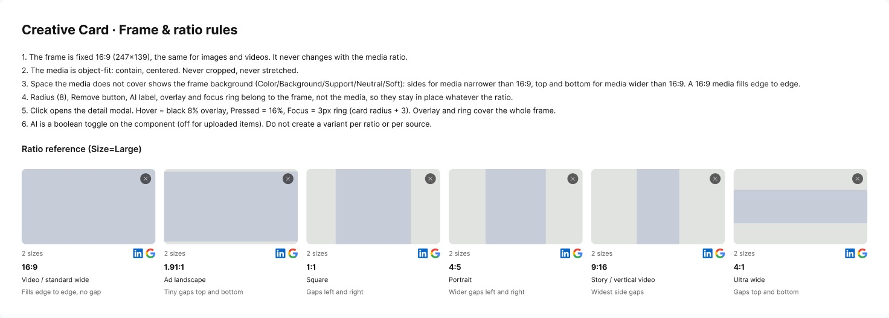
06
Design system: làm một lần, dùng cho mọi màn hình
Mình làm một thư viện Figma để 6 bước cùng mọi state của chúng được thiết kế mà không phải vẽ lại những phần giống nhau. Đây là vấn đề nó giải quyết. Toàn bộ thư viện được gập lại ở bên dưới.
Vì saoSáu bước, mỗi bước nhiều state
Mỗi bước có state mặc định, lỗi, loading, bị khóa và trống. Nếu vẽ từng màn hình, cùng một nút hay một ô nhập có thể lệch nhau giữa các bước, và mỗi lần sửa phải làm lại nhiều chỗ.
Làm gìToken và variant, không copy
Màu đi qua bốn lớp, nên component không bao giờ giữ mã hex. Mỗi component mang size, state và hierarchy dưới dạng variant, và một text style chuyển được giữa Desktop và Mobile.
Tác dụngSửa một chỗ, mọi màn hình đổi theo
Đổi một token hay một component là cập nhật được tất cả màn hình. Mình thêm được state lỗi, loading và bị khóa cho cả sáu bước mà không phải nghĩ ra nút mới. Mình chưa đo thời gian tiết kiệm hay số lỗi giảm, nên không đưa con số nào cho phần này.
Để hình dung quy mô: 12 bộ variable, 77 component set với 1.671 variant, 34 text style và 76 color style, làm cho cả app chứ không chỉ cho flow này.
Mở chi tiết design system
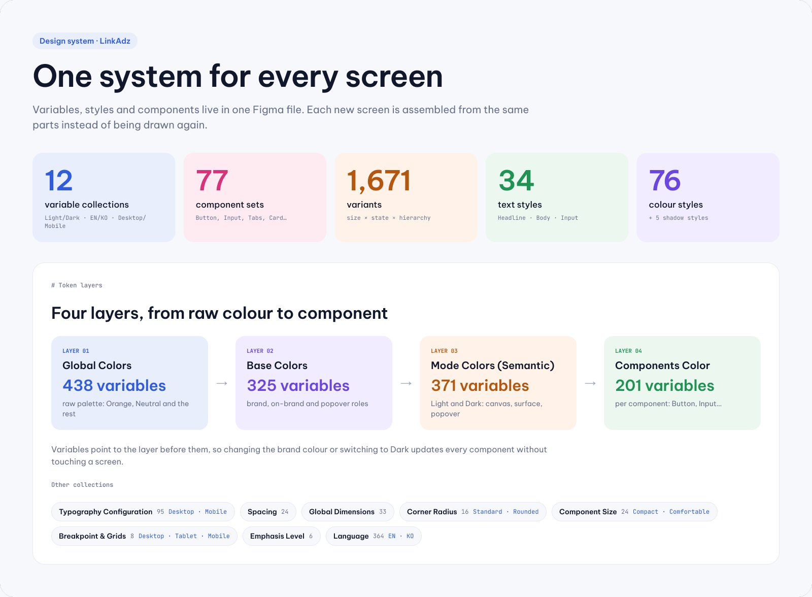
Token trỏ về lớp trước nó
Màu đi qua bốn lớp: Global Colors, Base Colors, Mode Colors (Light và Dark) và Components Color. Component không bao giờ chứa mã hex. Đổi màu thương hiệu hoặc chuyển sang Dark thì mọi component tự cập nhật mà không phải mở từng màn hình. Chữ cũng vậy: một text style tự đổi giữa Desktop và Mobile qua bộ Typography Configuration.
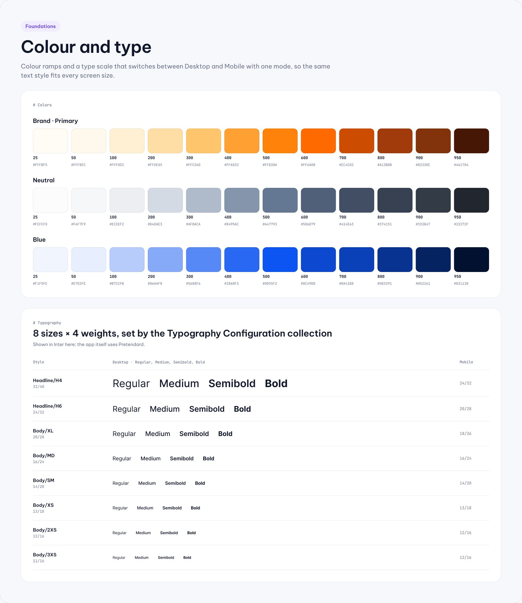
Dùng variant thay vì vẽ lại
Mỗi component mang sẵn size, state và hierarchy dưới dạng variant, nên màn hình chỉ chọn tổ hợp cần dùng thay vì vẽ mới. Nhờ vậy mình thêm được các trạng thái lỗi, loading, bị khóa và rỗng cho cả sáu bước mà không phải nghĩ thêm nút mới. Stepper là một component, mỗi bước là một variant.
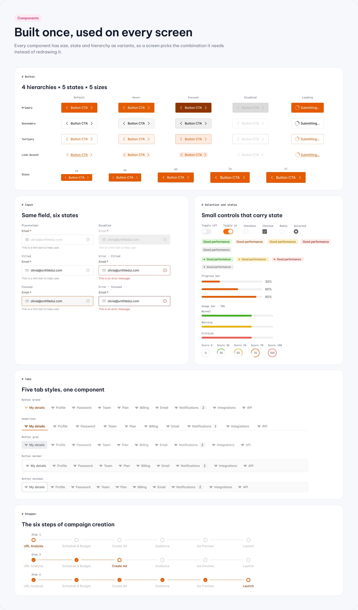
Từ phần nhỏ đến tính năng
Component xếp thành ba tầng: UI component (46 set), card và module (22) và feature (9). Creative Source Panel, Campaign Card và bộ chọn đối tượng đều được ghép từ cùng các nút, ô nhập và badge ở trên.

Một khung cho mọi creative
Creative Source Panel thêm ảnh, video và kết quả AI, Creative Card hiển thị chúng, còn Media Tile là bản nhỏ trong lưới asset. Mỗi cái có state default, hover, pressed, focus, uploading và lỗi. Nhãn AI là một boolean trên card, không tách thành variant theo từng nguồn.

App chờ như thế nào
AI chạy mất vài giây, nên mỗi lần chờ là một component có state riêng: scan trang cho thấy AI đang đọc gì, các dòng tick dần, dot wave tối khi AI đang tạo và border beam cam khi file đang upload. Dot wave và beam là cùng một component Loading Frame với 12 phase.
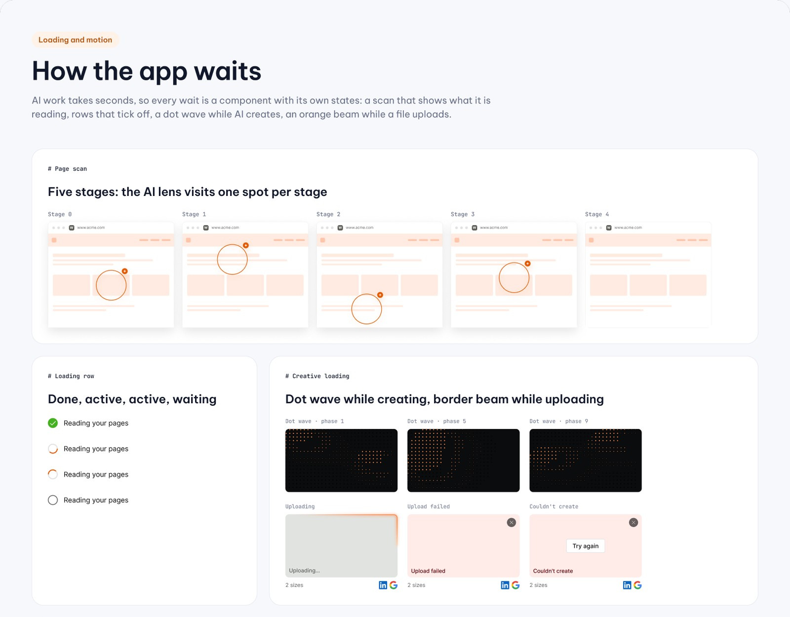
07
Trạng thái và cách đo
Flow 6 bước đã ra mắt cho mọi người dùng ngày 28/10/2026.
Lúc mình chuẩn bị portfolio, lượng người dùng flow mới còn quá ít để kết luận, nên mình chưa đưa số liệu kết quả lên đây. Mình sẽ bổ sung vào mục này khi có đủ 4 – 6 tuần dữ liệu (dự kiến trước 9/12/2026). Đây là cách mình sẽ đo, so với mốc ở mục 01:
01Tỷ lệ launch campaign đầu tiên
Bao nhiêu người bắt đầu thì đi đến được Launch.
02Thời gian đến lúc launch
So với trung vị 21,5 phút của flow 4 bước.
03Bước người dùng dừng lại nhiều nhất
Để biết bước nào cần làm tiếp.
04Cùng cách lọc như mốc ban đầu
Cùng event launch, loại tài khoản test, đo sau 4 – 6 tuần.
Những gì mình chưa làm được
- Chưa có số liệu sau ra mắt, vì flow mới mới chạy được vài tuần.
- Mình chưa chạy usability test với người dùng cho flow 6 bước. Thứ tự các bước đến từ prototype HTML của mình và góp ý của CTO, Director và FE developer. Test với người dùng thật là việc đầu tiên mình sẽ bổ sung.
- Mốc baseline lấy từ mẫu nhỏ, nên chỉ cho thấy xu hướng, chưa phải kết quả đã được kiểm chứng.
Bài học
- Ít bước hơn chưa chắc dễ hơn. Điều quan trọng là mỗi bước người dùng chỉ phải quyết định một việc.
- Mình sắp xếp các bước theo cách người dùng cung cấp thông tin cho AI, không chỉ theo cấu trúc của nền tảng quảng cáo.
- Thử ý tưởng trên prototype HTML trước khi vào Figma giúp sửa nhanh hơn và ít lãng phí hơn.
- Một rule viết đúng (responsive, token, khung creative) hiệu quả hơn vẽ lại từng màn hình.
- Feedback tốt không phải lúc nào cũng làm theo nguyên xi. Mình giải thích bằng lý do UX và đưa phương án tốt hơn để giữ được sự đồng thuận.